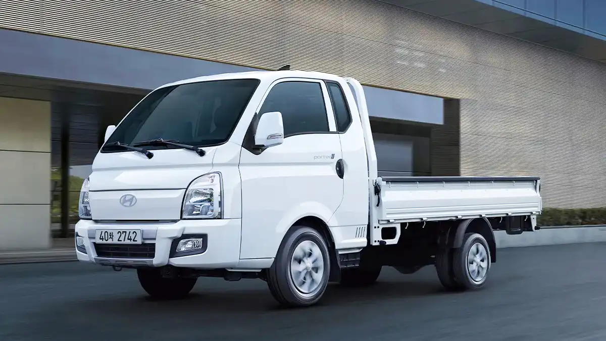
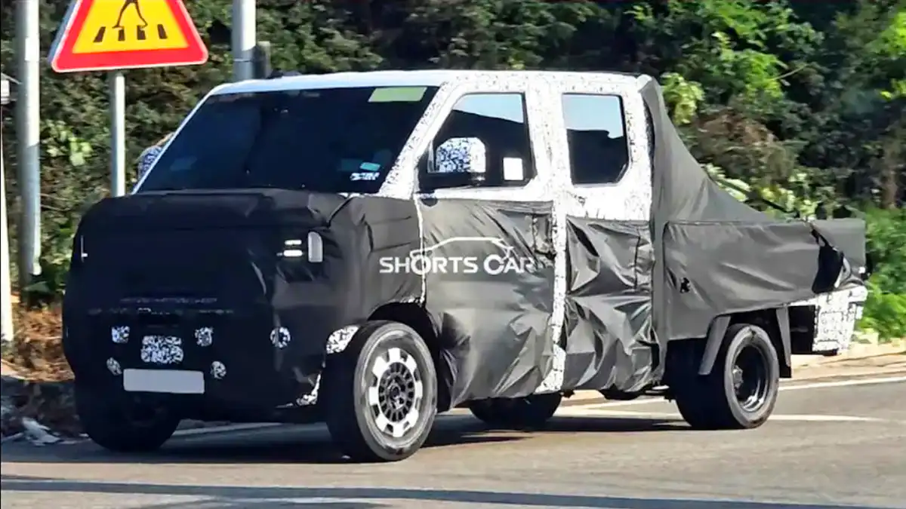
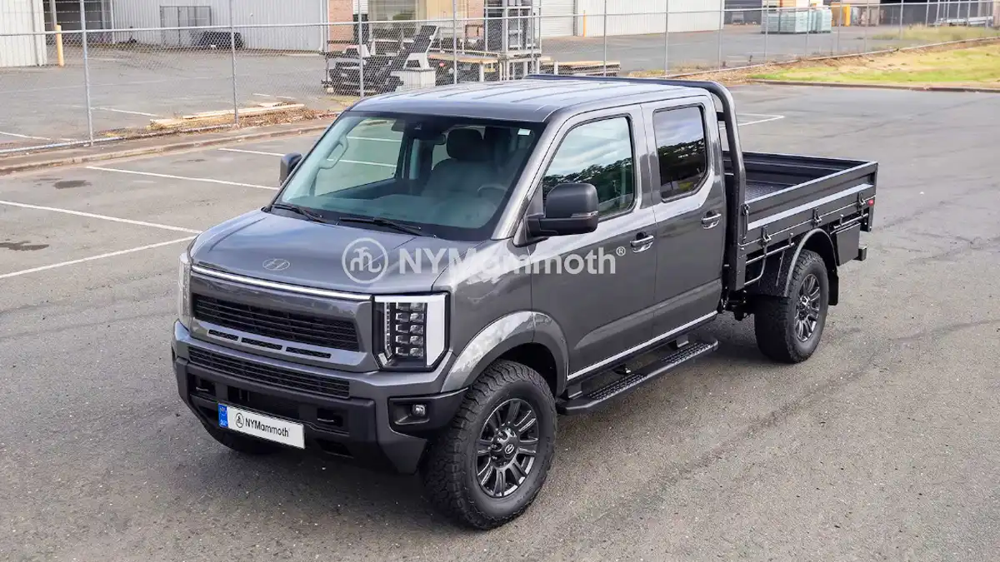
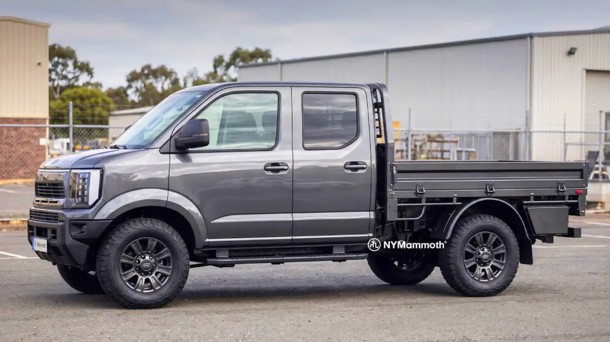
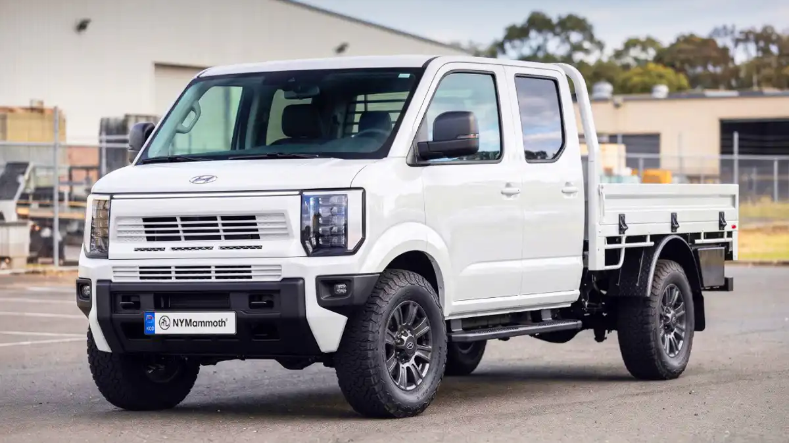
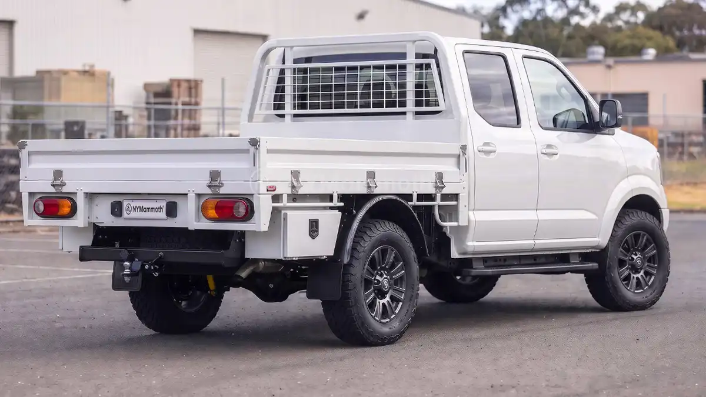

.






.
뒷좌석없는 모델도있지않을까 없으려나
포터 6미터 과적이라
아마 곧 오픈베드도 법으로 안될꺼임
옛날부터 오픈베드 규제한다했는데
반발심해서 버티고있긴함
아 이거 불법이었음..? 난리났네.. 삼하닉 근처 배관 제작 업체들 1톤화물로 6미터 1본 준나게 싣고 다니는데.. 난 이거 몰랐음....ㅋㅋ
배관업체는 이제 알아서 마이티 뽑고 다녀야지
디자인이 문제가 아님. 장축모델이 사라지는게 존나 큰일인대...?
맞음 장축없음 매리트가...
이 분야 갑은 도요타 하이에이스던데 도대체 1.5박스로 어떻게 그런 안전도 평가가 나오는지 알 수가 없는..
그거 수출 못나가는차 아님? 북미유럽 못나가는 차 안전도는 없다고보는게 맞음
1.5박스 6세대는 북미 말곤 수출 나갈걸? 호주 앤캡도 1등급 받았던데.
북미야 뭐 하이에이스 같은 애매한 위치는 수요도 그렇고 닛산 nv 같은것도 차 좋은데
북미는 단종에 괌,하와이나 가야 많이 보이지..
1.5박스가 스타렉스구나 포터같은 캡오버랑 같은뜻인줄알았음 차알못이슈다 ㅠㅠ
중기관총 싣기 딱 좋게 생겼네 😉
코리안 f150
저정도면 반쯤 픽업트럭 아니냐?
더블캡은 의외로 적재함길이 얼마 차이안날듯 지금 더블캡이 엔진룸땜에 후열 레그룸 안나와서 어거지로 뒤로 밀어놓은 뻥공간이라
리베로 신형이네
멋있는데?
또 한동안 변경없이 팔아야하니 조금 과감하게 바꾼듯
간지난다
https://www.youtube.com/shorts/ntb0EDjM_Yc
더블캡으로 이제 아예 나오는 건가??
매일 포터타는 입장에서는 출고시 무조건 롱바디 개조해서 타지 않을까 싶음
가장 일반적인 포터2 슈퍼캡 타는 중인데 내 생각에는 6미터 짜리 못싣게 하면 반발 어마어마할거임..
뭐 소비자가 물류비를 부담하거나 도막난 자재를 연결하는 인건비를 부담하게 되는 입장이 될거고..
순정 슈퍼캡은 2860mm로 3미터짜리도 끝에가 올라타게 되어있음
롱바디 개조하면 3400mm 까지 늘어난다는데 몇년전에 롱바디 모르고 차 바꿧다가 후회가 컷음..
출고때만 개조가 가능하다고 설명들었음
저렇게 나오고 견인력 지금 사양 그대로면 ㄹㅇ 코리안 픽업 자리 먹을듯.
흰색 중국차같음
앞에서 보면 그럴듯하다가 적재함에서 무슨쌀배달포터 계승한건지 싼마이냄새 올리오는게 용두사미같네 힘줄거면 제대로 주지 왜 중간에 쌈?
엔진룸 앞으로 빼면 차체가 좀 낮아지려나?
오전에는 전기포터로 사무용가구 납품하는 일하는 중인대...
영세한 물류업체랑 배송업무도 하는곳에서는 더블캡쓸 이유가 1%도 없음. 슈퍼캡으로 해서 조금이라도 짐칸 더 늘려서 물량 더 싣고움직이는게 중요하지. 극단적으로 말해서 기존 슈퍼캡에는 40개 싣을수 있는걸 더블캡은 30개밖에 못싣는다고 생각하면...
반발이 심할꺼 같은대.
저러면 배관 업체들은 죽어나겠네.. 기본 규격이 6미터로 나오는데 실어나를수가 없겠는데..?